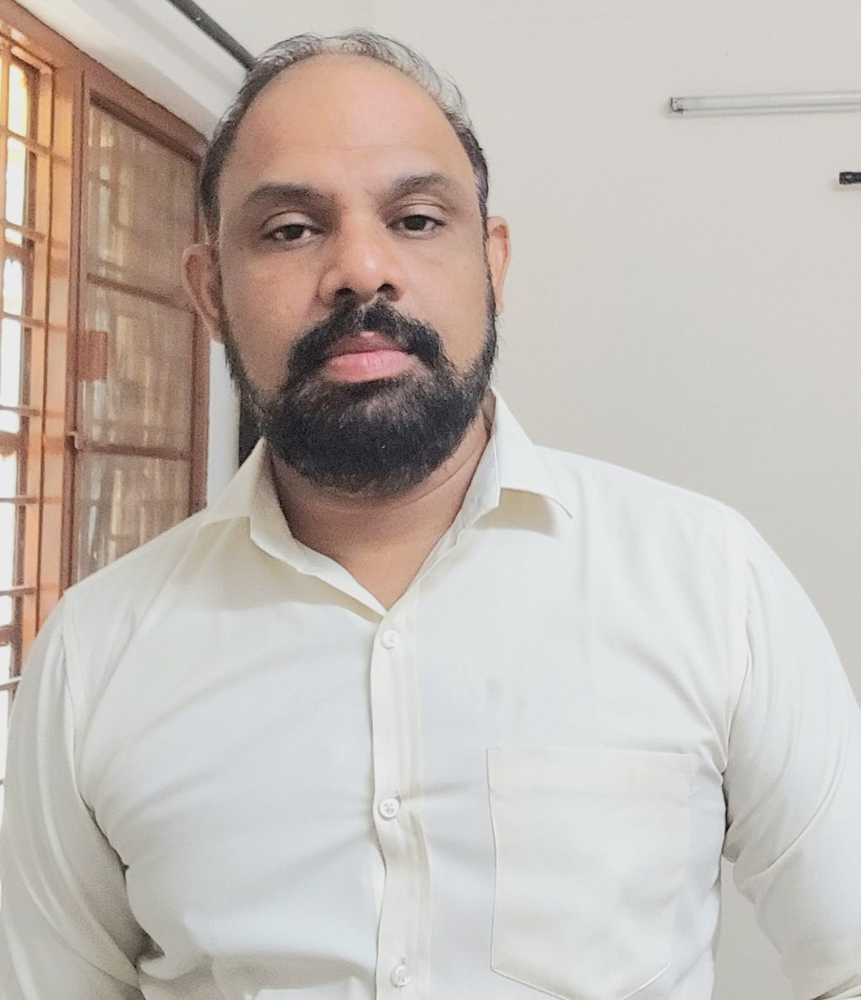

Senior Scientist · CAIR, Bangalore
Vinayak N.
Computer vision & tracking researcher — drone detection, visual object tracking, and signal & control systems. PhD candidate, IIT Tirupati.
About
I am a Senior Scientist at the Center for AI and Robotics (CAIR), Bangalore, where I work on computer vision and tracking problems for surveillance and defense applications — including infrared drone detection, visual object tracking, and perimeter intrusion detection. I am also a PhD candidate in the Electrical Engineering department at IIT Tirupati.
Alongside research, I teach core electronics engineering subjects — Signals and Systems, Control Systems, and Linear Integrated Circuits — at various engineering institutes, and have experience setting exam papers for GATE, SET, and other competitive exams.
Experience & Education
Senior Scientist
Center for AI and Robotics (CAIR), Bangalore
Visiting Faculty
Signals and Systems · Control Systems · Linear Integrated Circuits — various engineering institutes
Ph.D., Electrical Engineering
Indian Institute of Technology (IIT), Tirupati
M.Tech., Electronics Systems
Indian Institute of Technology (IIT), Bombay — Department Topper, CGPA 10/10
B.E., Industrial Electronics
Walchand Institute of Technology (WIT), Solapur
Research Publications
- V. Nageli, A. Kumar, R. K. S. S. Gorthi, and A. Jamal, "The first place solution for ICIP2023 challenge infrared imaging-based drone detection and tracking in distorted surveillance videos," in 2023 IEEE International Conference on Image Processing Challenges and Workshops (ICIPCW), IEEE, 2023, pp. 1–5.
- A. Chakraborty, A. Mallick, P. Saha, S. R. K. Vadali, S. Aruchamy, and V. S. Nageli, "Design and IoT implementation of a long range laser based intrusion detection system for perimeter surveillance," in 2022 International Interdisciplinary Conference on Mathematics, Engineering and Science (MESIICON), IEEE, 2022, pp. 1–6.
- A. Chakraborty, A. Mallick, S. R. Nemalidinne, S. R. K. Vadali, S. Aruchamy, and V. S. Nageli, "A novel energy based ground movement detection technique using seismic signal," in 2021 5th International Conference on Information Systems and Computer Networks (ISCON), IEEE, 2021, pp. 1–6.
- V. Nageli, R. K. S. S. Gorthi, and A. Jamal, "SiamRPN++D: Improved SiamRPN++ using cascaded detector sensing," in Proceedings of the Twelfth Indian Conference on Computer Vision, Graphics and Image Processing, 2021, pp. 1–9.
- I. A. Syed, V. Nageli, S. Sangeeta, and S. Rakshit, "Digital sand model using virtual reality workbench," in 2012 International Conference on Computer Communication and Informatics, IEEE, 2012, pp. 1–6.
- C. Adithya, K. Kowsik, D. Namrata, V. Nageli, S. Shrivastava, and S. Rakshit, "Augmented reality approach for paper map visualization," in 2010 International Conference on Communication and Computational Intelligence (INCOCCI), IEEE, 2010, pp. 352–356.
- L. Bharath, S. Shashank, V. Nageli, S. Shrivastava, and S. Rakshit, "Tracking method for human computer interaction using Wii remote," in INTERACT-2010, IEEE, 2010, pp. 133–137.
Skills & Awards
Core Subjects
Signals and Systems, Control Systems, Electronics Circuits Design
Applied Research
Computer vision, object tracking, drone detection, academic research, training and consultation
Exam Design
GATE, SET, and practice-set paper setting for coaching institutes
Languages
English, Marathi, Hindi, Telugu
- 2013 — Merit Award, Department Topper, CGPA 10/10, IIT Bombay
- 2005 — GATE Score: 98.80%
Contact
Feel free to reach out for research collaboration, teaching engagements, or consultation.